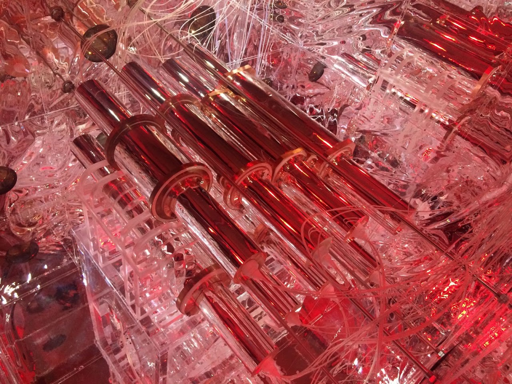

Dark Matter
Official Site ↗
COSINE
The COSINE-100 experiment is an underground particle physics project searching for dark matter. Located at the Yemilab Underground Laboratory in South Korea, it uses ultra-pure sodium iodide crystals to detect Weakly Interacting Massive Particles (WIMPs). Its primary goal is to test the controversial claim of dark matter discovery made by the DAMA/LIBRA experiment.